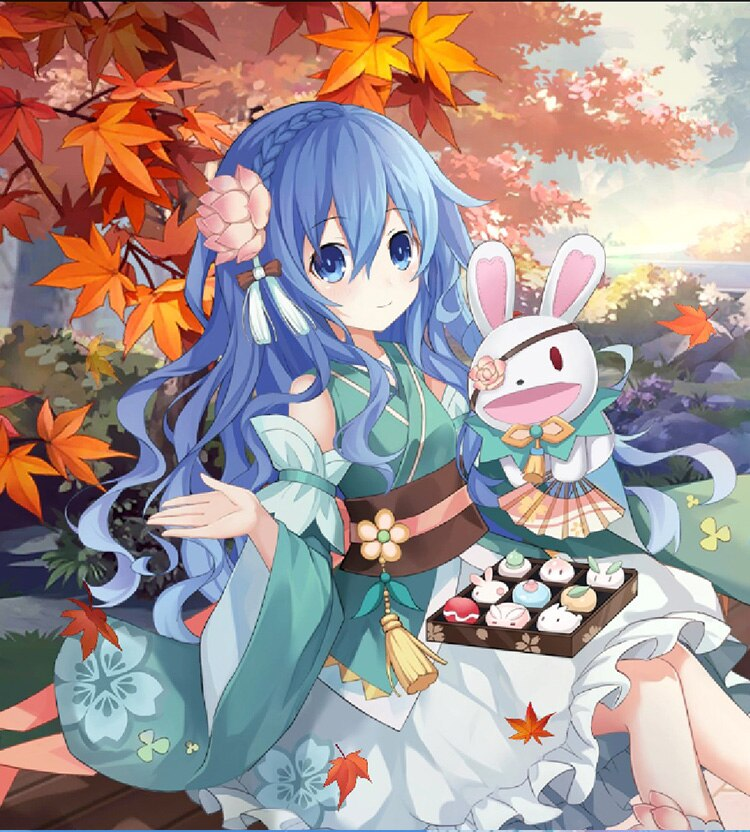

Yoshino is the second Spirit in Date A Live, a cute little girl with a bunny puppet on her hand.
She is usually very shy, with difficulties expressing herself, instead, her puppet, Yoshinon, is always speaking out for her. But after she was saved by Shido, she started to improve her communication skills gradually, without relying on Yoshinon.
For more informations, please visit here
